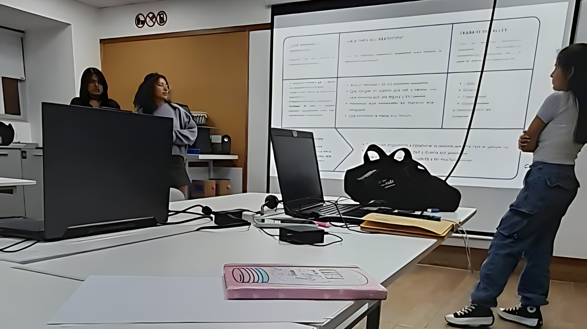

¡Comencemos!
Esta semana comenzamos recordando un poco sobre la teoría del Toulouse Thinking, una metodología que fomenta la creatividad y la innovación en el diseño. También repasamos los conceptos relacionados con los prototipos de baja fidelidad, una técnica eficaz para visualizar y probar ideas rápidamente.
Después de revisar la teoría, nos centramos en nuestros proyectos grupales. Empezamos a trabajar en nuestros propios prototipos de baja fidelidad, aplicando lo aprendido en la fase inicial del proceso. Posteriormente, cada grupo realizó exposiciones para compartir sus ideas y recibir retroalimentación constructiva.
Estas actividades nos permitieron aplicar activamente los conceptos teóricos en la práctica, mejorando nuestro entendimiento y habilidades en el diseño y desarrollo de proyectos colaborativos.
Sigamos con la Bitacora Digital
Después de concluir la primera parte de la clase, nos organizamos en grupos para implementar las correcciones sugeridas durante la retroalimentación de nuestras exposiciones anteriores. Esta fase nos permitió afinar y mejorar nuestras presentaciones. Luego, procedimos a avanzar en el desarrollo de nuestras bitácoras digitales, aprovechando la asistencia del profesor para resolver cualquier inconveniente técnico o conceptual que surgiera. Su guía fue fundamental para mantener nuestro trabajo en curso y asegurar un aprendizaje efectivo.